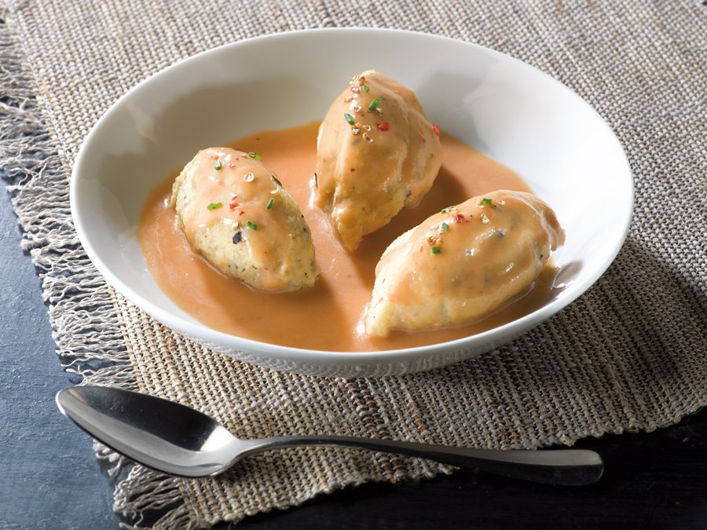
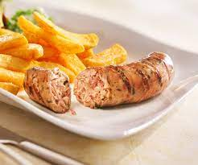
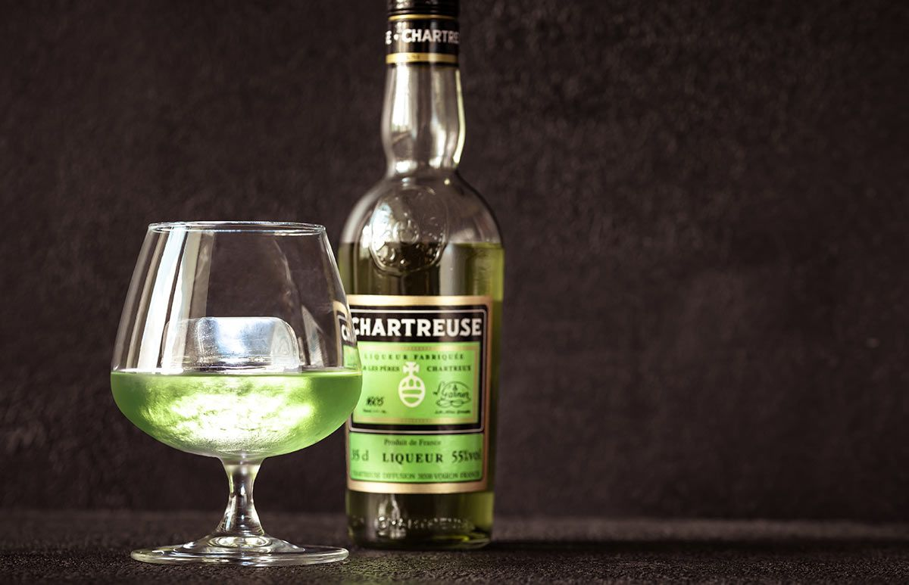

Traditional Food of Lyon

Quenelles
Delicate dumplings made from creamed fish or meat, served with a rich crayfish sauce.

Salade Lyonnaise
A hearty salad with frisée lettuce, poached egg, bacon, and croutons.

Andouillette
A bold sausage made from pork intestines and tripe. A favorite for adventurous eaters.

Cervelle de Canut
A fresh cheese spread made with herbs, garlic, and vinegar, perfect with bread.
Drinks of Lyon

Beaujolais Wine
Light and fruity red wine from the nearby Beaujolais region.

Chartreuse
A herbal liqueur made by monks, available in green and yellow varieties.